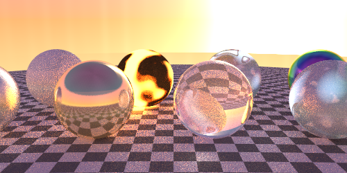
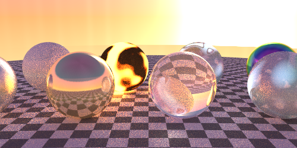

Project Overview
I built a comprehensive ray tracing engine from the ground up, implementing advanced rendering techniques to create photorealistic 3D scenes. This project showcases my understanding of computer graphics, mathematical algorithms, and performance optimization.
The engine supports multiple lighting models, material properties, geometric primitives, and advanced effects like reflections, refractions, and global illumination. Every pixel is calculated with precision to achieve stunning visual fidelity.


 
